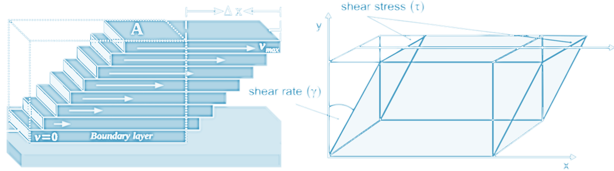

Lecture 2 – The Dynamics of Rotating Planets
The Coriolis Force
The Coriolis parameter $f$ is defined according to latitude $\varphi$: $$ f(\varphi) = 2\Omega \sin(\varphi) $$ with the rotation rate $\Omega$, set to $$ \Omega = \frac{2\pi}{day} = \frac{2\pi}{86164} \ \text{sec}^{-1} $$ (i.e., corresponding to the standard Earth rotation rate).Beta-Plane Approximation
The Coriolis parameter $f = 2\Omega \sin\theta$, where $\Omega$ is the angular rotation rate of the Earth and $\theta$ is the latitude. Expand $f$ around $\theta = \theta_o$ using a Taylor series: $$ f = f_o + \left. \frac{\partial f}{\partial \theta} \right|_{\theta_o} \Delta \theta + \left. \frac{\partial^2 f}{\partial \theta^2} \right|_{\theta_o} \frac{\Delta \theta^2}{2} + \dots $$ $$ = 2\Omega \sin \theta_o + 2\Omega \cos \theta_o (\theta - \theta_o) + \mathcal{O}(\Delta \theta^2) $$ $$ = \boxed{f_o + \beta y} $$ where $f_o = 2\Omega \sin \theta_o$ and $\beta = \frac{2\Omega \cos \theta_o}{a}$, as $y = a\Delta \theta$, where $a$ is the radius of the Earth.- The β-plane approximates $f$ as the first two terms of the Taylor Series. The Coriolis parameter changes linearly with latitude.
- The f-plane approximates $f$ as the first term of the Taylor Series; $f$ is taken as a constant.
Hydrostatic Approximation
\[0 = - \frac{1}{\rho} p_z + g\]The sum of the pressure gradient and the gravitational force per unit volume must be zero
Conservation of Mass
A fundamental law of physics stating that a volume always containing the same atoms and molecules (system) must always contain the same mass. Thus the time rate of change of mass of a system is zero. This law of physics must be revised when matter moves at speeds approaching the speed of light so that mass and energy can be exchanged as per Einstein’s laws of relativity.Conservation of Momentum
This is Newton’s second law of motion, a fundamental law of physics stating that the time rate of change of momentum of a fixed mass (system) is balanced by the net sum of all forces applied to the mass.Continuity Equation
In the absence of sources or sinks of mass within the fluid, the condition of mass conservation is expressed by the continuity equation. In other words, the continuity equation is the mathematical form of conservation
of mass applied to a fluid particle in a flow.
\[
\frac{\partial \rho}{\partial t} + \nabla \cdot (\rho \mathbf{u}) = 0
\]
where \(\rho\) is the mass density of the fluid.
The equation can be derived by considering a volume \(V\) fixed in space, bounded by a surface \(S\). If the volume is filled by a fluid with density \(\rho\), its mass is \(M = \int_V \rho \, dV\)
Divergence \(\nabla \cdot (\cdots)\) indicates the tendency of a vector field to
point outward of a closed surface.
When the divergence of velocity \(\nabla \cdot \mathbf{u}\) is positive, the fluid is expanding; negative divergence indicates contraction.
Imagine a volume of fluid with a complex distribution of \(\mathbf{u}\) at its bounding surface, the \(\nabla \cdot \mathbf{u}\) calculation will isolate the diverging component (right) from uniform flow (centre).

Equation of State of Seawater
\[ \rho = \rho(\underbrace{T}_{\text{temperature}}, \underbrace{S}_{\text{salinity}}, \underbrace{p}_{\text{pressure}}) \]Barotropic and Baroclinic
A fluid in which the density depends only on the pressure, $\rho = \rho(p)$, is called a barotropic fluid. A fluid in which the density depends on both temperature and pressure, $\rho = \rho(p, T)$, is called a baroclinic fluid.Linear Approximation
\[\rho = f(T,S,p) \approx \rho_0(1- \alpha T + \beta S)\] \[ \alpha = \underbrace{\alpha_0}_{\text{reference value}} \left[ 1 + \underbrace{\beta_T (1 + \gamma^* p)(T - T_0)}_{\text{linear thermal expansion}} + \underbrace{\frac{\beta_T^*}{2} (T - T_0)^2}_{\text{nonlinear thermal effect}} - \underbrace{\beta_S (S - S_0)}_{\text{salinity effect}} - \underbrace{\beta_p (p - p_0)}_{\text{pressure effect}} \right] \]If the equation of state were such that it linked only density and pressure, without introducing another variable, then the equations would be complete; the simplest case of all is a constant density fluid for which the equation of state is just \(\rho = \text{constant}\). A fluid for which the density is a function of pressure alone is called a barotropic fluid or a homentropic fluid; otherwise, it is a baroclinic fluid. Equations of state of the form $p = C\rho^\gamma$, where $\gamma$ is a constant, are called polytropic
Shear Stress in Fluids
The shear stress of a fluid can be defined as a unit area amount of force acting on the fluid parallel to a very small element of the surface. For the most accurate calculation, the elements should be infinitesimal. The greatest source of stress is the fluid viscosity. Depending upon the medium, shear stress may cause a change in fluid flow between layers. Under the action of such forces it deforms continuously, however small they are. The resistance to the action of shearing forces in a fluid appears only when the fluid is in motion. This implies the principal difference between fluids and solids. For solids the resistance to a shear deformation depends on the deformation itself, that is the shear stress $\tau$ is a function of the shear strain $\gamma$. For fluids the shear stress $\tau$ is a function of the rate of strain $d\gamma/dt$. Shear stress in fluids refers to the force per unit area acting tangentially to the fluid's surface due to its continuous, relative motion.
Viscosity
Shear stress is primarily caused by friction between fluid particles, due to fluid viscosity. The property of a fluid to resist the growth of shear deformation is called viscosity. The form of the relation between shear stress and rate of strain depends on a fluid, and most common fluids obey Newton’s law of viscosity, which states that the shear stress is proportional to the strain rate: $$ \tau = \mu \frac{d\gamma}{dt} $$ Such fluids are called Newtonian fluids. The coefficient of proportionality $\mu$ is known as dynamic viscosity and its value depends on the particular fluid. The ratio of dynamic viscosity to density is called kinematic viscosity $$ \nu = \frac{\mu}{\rho} $$Steady State Assumption
The continuety equation states that the local increase of density with time must be balanced by a divergence of the mass flux \(\rho \mathbf{u}\). This may also be written \[ \frac{d\rho}{dt} + \rho \nabla \cdot \mathbf{u} = 0 \] where \[ \frac{d}{dt} \equiv \frac{\partial}{\partial t} + \mathbf{u} \cdot \nabla \] is the total derivative (often called the substantial derivative) with respect to time of any property following individual fluid elements
Incompressible Navier-Stokes Equations
\[\left(\frac{\partial}{\partial t} + \mathbf{u}\cdot \nabla - \nu \nabla^2\right) \mathbf{u} = - \frac{1}{\rho} \nabla p + f \]import numpy as np
import matplotlib.pyplot as plt
def incompressible_navier_stokes(u, v, dx, dy, dt, viscosity):
# Spatial derivatives
du_dx = np.gradient(u, dx, axis=1)
du_dy = np.gradient(u, dy, axis=0)
dv_dx = np.gradient(v, dx, axis=1)
dv_dy = np.gradient(v, dy, axis=0)
# Laplacians
laplacian_u = np.gradient(du_dx, dx, axis=1) + np.gradient(du_dy, dy, axis=0)
laplacian_v = np.gradient(dv_dx, dx, axis=1) + np.gradient(dv_dy, dy, axis=0)
# Update velocities
u_new = u - dt * (u * du_dx + v * du_dy) + dt * viscosity * laplacian_u
v_new = v - dt * (u * dv_dx + v * dv_dy) + dt * viscosity * laplacian_v
return u_new, v_new
# Example
nx, ny = 50, 50
dx, dy = 1.0 / nx, 1.0 / ny
x, y = np.meshgrid(np.linspace(0, 1, nx), np.linspace(0, 1, ny))
u = np.sin(2 * np.pi * x) * np.cos(2 * np.pi * y)
v = -np.cos(2 * np.pi * x) * np.sin(2 * np.pi * y)
dt = 0.001
viscosity = 0.1
# Time-stepping
for _ in range(100):
u, v = incompressible_navier_stokes(u, v, dx, dy, dt, viscosity)
# Plot
fig, ax = plt.subplots(figsize=(8, 6), dpi = 300)
fig.patch.set_alpha(0.0)
ax.set_facecolor('none')
# Streamplot
ax.streamplot(x, y, u, v, color='#d6ebff')
ax.set_xlabel('x', color='#d6ebff', fontsize=14)
ax.set_ylabel('y', color='#d6ebff', fontsize=14)
ax.tick_params(colors='#d6ebff')
ax.set_title("Incompressible Flow Field", color='#d6ebff', fontsize=16)
# Set frame (spines) color
for spine in ax.spines.values():
spine.set_edgecolor('#d6ebff')
plt.show()
import numpy as np
import matplotlib.pyplot as plt
# Set domain size and grid
nx, ny = 50, 50
dx, dy = 1.0, 1.0
nt = 500
rho = 1.0
mu = 0.1
dt = 0.1
# Initialization
u = np.zeros((nx, ny))
v = np.zeros((nx, ny))
p = np.zeros((nx, ny))
u[24:27, 24:27] = 1.0 # Initial condition: bump in u
def laplacian(f, dx, dy):
return (
(f[2:, 1:-1] - 2*f[1:-1, 1:-1] + f[:-2, 1:-1]) / dx**2 +
(f[1:-1, 2:] - 2*f[1:-1, 1:-1] + f[1:-1, :-2]) / dy**2
)
def pressure_poisson(p, u, v, dx, dy, rho, dt):
b = rho * ((u[2:,1:-1] - u[:-2,1:-1]) / (2*dx) +
(v[1:-1,2:] - v[1:-1,:-2]) / (2*dy)) / dt
for _ in range(50): # Iterative solver
p[1:-1, 1:-1] = 0.25 * (
p[2:, 1:-1] + p[:-2, 1:-1] +
p[1:-1, 2:] + p[1:-1, :-2] -
b * dx**2
)
return p
def solve_coupled(u, v, p, mu, dx, dy, dt, rho, nt):
for _ in range(nt):
u_old = u.copy()
v_old = v.copy()
# Pressure Poisson solve (right-hand side: velocity divergence)
p = pressure_poisson(p, u_old, v_old, dx, dy, rho, dt)
# Update u using pressure gradient and diffusion
u[1:-1, 1:-1] = u_old[1:-1, 1:-1] - dt / rho * (p[2:, 1:-1] - p[:-2, 1:-1]) / (2 * dx) + \
mu * dt * laplacian(u_old, dx, dy)
# Update v using pressure gradient and diffusion
v[1:-1, 1:-1] = v_old[1:-1, 1:-1] - dt / rho * (p[1:-1, 2:] - p[1:-1, :-2]) / (2 * dy) + \
mu * dt * laplacian(v_old, dx, dy)
return u, v, p
# Solve the equations
u, v, p = solve_coupled(u, v, p, mu, dx, dy, dt, rho, nt)
plt.figure(figsize=(15, 5), dpi=300)
plt.subplot(1, 3, 1)
plt.title('Velocity field (u)', color='#d6ebff')
plt.imshow(u.T, origin='lower', cmap='coolwarm')
plt.colorbar(label='u')
plt.axis('off')
plt.subplot(1, 3, 2)
plt.title('Velocity field (v)', color='#d6ebff')
plt.imshow(v.T, origin='lower', cmap='coolwarm')
plt.colorbar(label='v')
plt.axis('off')
plt.subplot(1, 3, 3)
plt.title('Pressure field', color='#d6ebff')
plt.imshow(p.T, origin='lower', cmap='coolwarm')
plt.colorbar(label='p')
plt.axis('off')
plt.tight_layout()
plt.show()
Ekman Transport
- Ekman flow in NH is 90º to the right of the wind stress
- Cyclonic wind (around low presure) forces divergence in water, and upwelling
- Anticyclonic wind (around high pressure) forces convergence and downwelling
Use the files ERA5_LowRes_MonthlyAvg_uvslp.nc and ERA5_LowRes_Invariant.nc as examples. The first step in calculating the Ekman currents is obtaining wind stress from the wind velocity.
import numpy as np
import xarray as xr
import matplotlib.pyplot as plt
import cartopy.crs as ccrs
import cartopy.feature as cfeature
import os
import imageio
output_dir = 'windstress_gif_frames'
gif_path = 'windstress_animation.gif'
os.makedirs(output_dir, exist_ok=True)
# Load data
ds = xr.open_dataset('ERA5_LowRes_MonthlyAvg_uvslp.nc')
# Constants
rho_air = 1.225
cd = 1.5e-3
R = 6371000
dpi = 300
tick_color = '#d6ebff'
step = 5 # vector density
# Compute wind stress
u10 = ds['u10']
v10 = ds['v10']
ws = np.sqrt(u10**2 + v10**2)
tau_x = rho_air * cd * ws * u10
tau_y = rho_air * cd * ws * v10
tau = np.sqrt(tau_x**2 + tau_y**2)
lon = ds.longitude
lat = ds.latitude
# Use a fixed vmin/vmax across all frames for consistent colorbar
tau_vmin = float(tau.min().values)
tau_vmax = float(tau.max().values)
image_paths = []
for month_index in range(len(ds['month'])):
tau_plot = tau.isel(month=month_index)
tau_x_plot = tau_x.isel(month=month_index)
tau_y_plot = tau_y.isel(month=month_index)
fig = plt.figure(figsize=(10, 5), dpi=dpi)
ax = fig.add_subplot(1, 1, 1, projection=ccrs.PlateCarree())
# Plot tau manually to allow control over colorbar
mesh = ax.pcolormesh(
lon, lat, tau_plot,
cmap='Greens',
vmin=tau_vmin, vmax=tau_vmax,
transform=ccrs.PlateCarree()
)
# Add quiver
ax.quiver(
lon[::step], lat[::step],
tau_x_plot.values[::step, ::step],
tau_y_plot.values[::step, ::step],
transform=ccrs.PlateCarree(), scale=700, color=tick_color
)
ax.coastlines()
ax.add_feature(cfeature.BORDERS, linewidth=0.5, edgecolor=tick_color)
gl = ax.gridlines(draw_labels=True, color=tick_color, linestyle='--', linewidth=0.3)
gl.xlabel_style = {'color': tick_color}
gl.ylabel_style = {'color': tick_color}
# Colorbar
cbar = fig.colorbar(mesh, ax=ax, orientation='vertical', pad=0.02, shrink=0.8)
cbar.set_label("Wind Stress (N/m²)", color=tick_color)
cbar.outline.set_edgecolor(tick_color)
cbar.ax.yaxis.set_tick_params(color=tick_color)
plt.setp(cbar.ax.yaxis.get_ticklabels(), color=tick_color)
# Overlay month label (bottom left corner)
ax.text(
0.02, 0.02, f"Month {month_index}",
transform=ax.transAxes,
fontsize=14, color=tick_color,
ha='left', va='bottom',
bbox=dict(facecolor='white', edgecolor=tick_color, alpha=0.5, boxstyle='round,pad=0.3')
)
# Save frame
frame_path = os.path.join(output_dir, f'windstress_frame_{month_index:02d}.png')
plt.tight_layout()
plt.savefig(frame_path, dpi=dpi, bbox_inches='tight', facecolor='none')
image_paths.append(frame_path)
plt.close()
# --- Create GIF with infinite loop ---
with imageio.get_writer(gif_path, mode='I', duration=3, loop=0) as writer: # duration: x seconds per frame
for path in image_paths:
image = imageio.imread(path)
writer.append_data(image)
print(f"GIF created at: {gif_path}")
The transport of water integrated over the Ekman layer is: \[ M_{ek} = \frac{\tau_{wind} \times \hat{z}}{f} \] From the zonal and meridional components we can calculate the Ekman transport using: \[ M_x = \frac{\tau_y}{f} \] \[ M_y = -\frac{\tau_x}{f} \] Where \(M_x\) is the zonal Ekman transport, \(M_y\) is the meridional Ekman transport, and \(f\) is the Coriolis parameter depends on the latitude \(\theta\): \[ f = 2\Omega \sin(\theta) \] Where \(\Omega\) is the angular velocity of the Earth
# Compute Coriolis parameter f (on 1D latitude, then broadcast to 2D)
lat = ds.latitude
f = 2 * 7.2921150e-5 * np.sin(np.deg2rad(lat)) # Coriolis at each latitude
f = f.where((np.abs(lat) > 3) & (np.abs(lat) < 87)) # mask equator & poles
# Broadcast f to match tau shape
f2d = f.broadcast_like(tau_x_plot)
# Compute Ekman transport (m²/s)
mek_x = tau_y_plot / f2d
mek_y = -tau_x_plot / f2d
# Create 2D meshgrid of lat/lon in radians
lon2d, lat2d = np.meshgrid(ds.longitude, ds.latitude)
lat2d_rad = np.deg2rad(lat2d)
lon2d_rad = np.deg2rad(lon2d)
# Grid spacing in meters
dy = R * np.gradient(lat2d_rad, axis=0) # dφ
dx = R * np.cos(lat2d_rad) * np.gradient(lon2d_rad, axis=1) # dλ * cos(φ)
# Compute gradients of transport (divergence)
d_mek_x_dx = np.gradient(mek_x, axis=1) / dx
d_mek_y_dy = np.gradient(mek_y, axis=0) / dy
# Compute Ekman pumping (m/s → m/year)
wek = (d_mek_x_dx + d_mek_y_dy) / rho_water
wek = wek * 60 * 60 * 24 * 365 # m/year
# Convert to xarray for plotting
wek_da = xr.DataArray(
wek,
coords={"latitude": ds.latitude, "longitude": ds.longitude},
dims=["latitude", "longitude"]
)
tick_color = '#d6ebff'
fig, ax = plt.subplots(figsize=(13, 5), subplot_kw={'projection': ccrs.PlateCarree()})
# Plot the data
plot = wek_da.plot(
ax=ax,
transform=ccrs.PlateCarree(),
cmap='RdBu_r',
vmin=-50,
vmax=50,
cbar_kwargs={'label': 'Ekman Pumping (m/year)'}
)
ax.set_title("Ekman Pumping (Vertical Velocity from Wind Stress)", fontsize=14, color=tick_color)
ax.coastlines()
ax.add_feature(cfeature.BORDERS, linewidth=0.5, edgecolor=tick_color)
# Gridlines
gl = ax.gridlines(draw_labels=True, color=tick_color, linestyle='--', linewidth=0.3)
gl.xlabel_style = {'color': tick_color}
gl.ylabel_style = {'color': tick_color}
cbar = plot.colorbar
cbar.outline.set_edgecolor(tick_color)
cbar.ax.yaxis.set_tick_params(color=tick_color)
plt.setp(cbar.ax.yaxis.get_ticklabels(), color=tick_color)
cbar.set_label("Ekman Pumping (m/year)", color=tick_color)
#plt.savefig('Lecture2_EkmanPumping.png', dpi=300, bbox_inches='tight', facecolor='none')
plt.show()
One problem with the calculation of Ekman transport is that it tends to infinity close to the equator. Now try to make a combined streamline plot and mask a band of 3 degrees around the equator.
import numpy as np
import xarray as xr
import matplotlib.pyplot as plt
import cartopy.crs as ccrs
import cartopy.feature as cf
import matplotlib.ticker as mticker
from cartopy.mpl.ticker import LongitudeFormatter, LatitudeFormatter
import matplotlib.cm as cm
ds = xr.open_dataset('ERA5_LowRes_MonthlyAvg_uvslp.nc')
month_index = 0 # Choose a month to visualize
# Constants
rho_air = 1.225
cd = 1.5e-3
rho_water = 1000
R = 6371000 # Earth radius in meters
tick_color = '#d6ebff' # consistent theme
# Extract wind components
u10 = ds['u10'].isel(month=month_index)
v10 = ds['v10'].isel(month=month_index)
ws = np.sqrt(u10**2 + v10**2)
tau_x = rho_air * cd * ws * u10
tau_y = rho_air * cd * ws * v10
lat = ds.latitude
lon = ds.longitude
# Coriolis parameter (masked at equator/poles)
f = 2 * 7.2921150e-5 * np.sin(np.deg2rad(lat))
f2d = f.broadcast_like(tau_x)
# Ekman transport
Mx = tau_y / f2d
My = -tau_x / f2d
# Apply equatorial mask
mask = np.abs(lat) < 3
mask_np = np.broadcast_to(mask.values[:, np.newaxis], Mx.shape)
Mx_np = np.ma.masked_where(mask_np, Mx.values)
My_np = np.ma.masked_where(mask_np, My.values)
Mmag_np = np.sqrt(Mx_np**2 + My_np**2)
# Meshgrid for plotting
lon2d, lat2d = np.meshgrid(lon, lat)
# Plot
fig = plt.figure(figsize=(15, 5), dpi=300)
ax = plt.axes(projection=ccrs.PlateCarree(central_longitude=180))
ax.set_extent([120, 300, -60, 60], crs=ccrs.PlateCarree())
ax.coastlines()
ax.add_feature(cf.BORDERS, linewidth=0.5, edgecolor=tick_color)
# Gridlines styled
gl = ax.gridlines(draw_labels=True, color=tick_color, linestyle='--', linewidth=0.3)
gl.xlabels_top = False
gl.ylabels_right = False
gl.xlabel_style = {'color': tick_color}
gl.ylabel_style = {'color': tick_color}
gl.xlocator = mticker.FixedLocator([120, 150, 180, -150, -120, -90, -60])
gl.ylocator = mticker.FixedLocator([-60, -40, -20, 0, 20, 40, 60])
gl.xformatter = LongitudeFormatter()
gl.yformatter = LatitudeFormatter()
# Streamplot of Ekman transport
strm = ax.streamplot(
lon2d, lat2d, Mx_np, My_np,
transform=ccrs.PlateCarree(),
color=Mmag_np,
density=5,
linewidth=2,
cmap=cm.jet
)
ax.set_title("Ekman Transport (from Wind Stress)", fontsize=14, color=tick_color, pad=10)
cbar = fig.colorbar(strm.lines, ax=ax, orientation='vertical', pad=0.02, shrink=0.8)
cbar.set_label("Transport Magnitude (m²/s)", color=tick_color)
cbar.outline.set_edgecolor(tick_color)
cbar.ax.yaxis.set_tick_params(color=tick_color)
plt.setp(cbar.ax.yaxis.get_ticklabels(), color=tick_color)
plt.savefig("ekman_transport_streamplot.png", dpi=300, bbox_inches='tight', facecolor='none')
plt.show()
Sverdrup Relation
\[ V = \frac{1}{\rho_0 \beta} \nabla \times \tau \] \(V\) is the meridional (north–south) transport, \(\rho_0 \approx 1024 \, \text{kg m}^{-3}\) the density of sea water, \(\beta\) the Rossby parameter, and \(\tau\) the surface wind stress. We study the connection of the Sverdrup relation to the barotropic streamfunction \(\Psi\), for which \[ \frac{\partial \Psi}{\partial y} = -U, \quad \frac{\partial \Psi}{\partial x} = V \]- Depth integral over Sverdrup Relation \(U\) and \(V\) are defined as \[ U(x, y, t) = \int_{-D}^0 u(x, y, z, t) \, dz, \quad V(x, y, t) = \int_{-D}^0 v(x, y, z, t) \, dz \]
- The Sverdrup balance describes the relationship between the curl of the wind stress $\tau$ and the vertical integral of the horizontal velocity V in the ocean
- Illustrates how wind stress drives large-scale ocean circulation patterns, such as gyres, by inducing a circulation balanced by the Coriolis force Sverdrup balance is a remarkable simplification of the ocean circulation. It tells us that, just given knowledge of the wind stress field, we can estimate the full-depth integrated meridional transport.
Wind Driven Gyres
\[ U_x + V_y = 0 \] \[ U = \frac{-1}{\beta\rho_0} \int_x^{x_e} (\text{curl} \tau)_y \text{d}x \]Assume \(\tau^y = 0\) and \(\tau^x_x = 0\)
\[ U = \frac{1}{\beta \rho_0} \tau^x_{yy} \Delta x \]

\( \text{II} \quad fu = -\frac{1}{\rho_0} p_y + \frac{1}{\rho_0} \tau^y_z \)
\( \text{III} \quad 0 = -\frac{1}{\rho} p_z + g \)
\( \text{IV} \quad u_x + v_y + w_z = 0 \quad \text{(continuity equation)} \)
What were our assumptions/approximations that got us here? $(II)_x - (I)_y$, combine with continuity equation (IV): \[ \beta v = f w_z + \frac{1}{\rho_0} \frac{\delta}{\delta z} \text{curl} \, \vec{\tau} \quad \text{no friction below the mixed layer, so} \] At the ocean top and bottom $w = 0$, so a depth integral yields: \[ \vec{V}_S = \frac{1}{\beta \rho_0} \text{curl} \, \vec{\tau} \quad \boxed{\textbf{!!! The Sverdrup Balance!}} \] What about $U$, the zonal transport? At the ocean top and bottom $w = 0$, so a depth integral of IV yields: $$ U_x + V_y = 0 $$ which, combined with $\vec{V}_S = \frac{1}{\beta \rho_0} \text{curl} \, \vec{\tau}$, yields: $$ U = -\frac{1}{\beta \rho_0} \int_x^{x_e} (\text{curl} \, \vec{\tau})_y \, dx $$ Let’s assume $\tau^y = 0$ and $\tau^x_x = 0$, so: $$ U = \frac{1}{\beta \rho_0} \tau^x_{yy} \, \Delta x $$
The flow is proportional to the curvature of the zonal wind stress, not the wind itself.
The Oceanic Mixed Layer and Thermocline
The stratification of the ocean is decidedly nonuniform in the vertical. The density is almost uniform in a layer at the top of the ocean about 50–100 m deep known as the mixed layer. The density then increases fairly rapidly over a region 500–1000 m deep known as the pycnocline, and is then fairly uniform in the abyss. The weak stratification in the abyss and in the mixed layer will inhibit the propagation of internal waves generated in the thermocline.
- Heat fluxes through the surface heat and cool the surface waters. Changes in temperature change the density contrast between the mixed layer and deeper waters. The greater the contrast, the more work is needed to mix the layer downward and visa versa.
- Turbulence in the mixed layer mixes heat downward. The turbulence depends on the wind speed and on the intensity of breaking waves. Turbulence mixes water in the layer, and it mixes the water in the layer with water in the thermocline.
- The mixed layer tends to be saltier than the thermocline between $10^\circ$ and $40^\circ$ latitude, where evaporation exceeds precipitation.
- At high latitudes, the mixed layer is fresher because rain and melting ice reduce salinity.
- In some tropical regions, such as the warm pool in the western tropical Pacific, rain also produces a thin, fresher mixed layer.